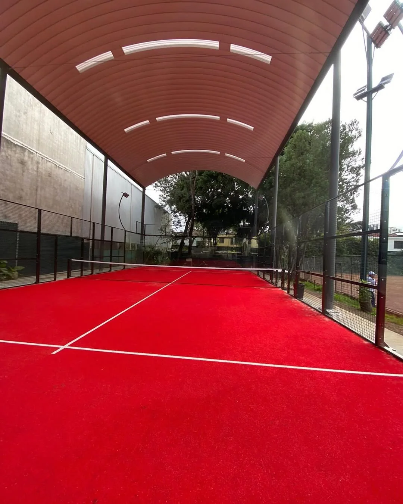
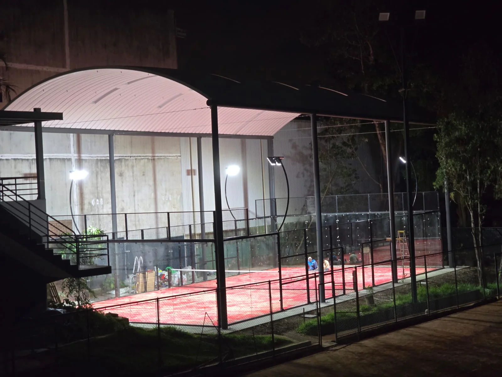
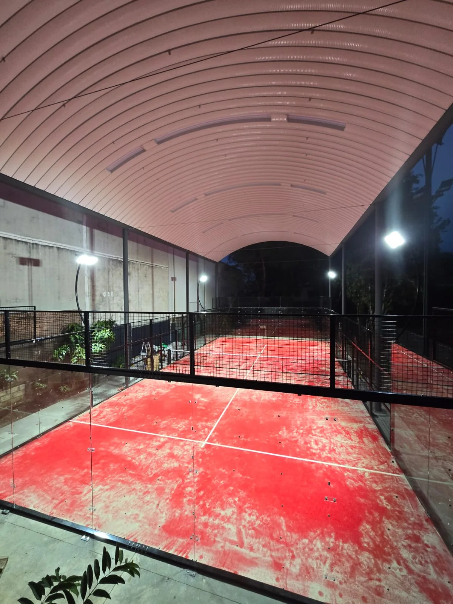

Court System
Panoramic padel court system supplied for the covered project.
A completed covered panoramic padel court project in Guatemala. SPORTENVO supplied the court system, roof, turf and lighting, and provided installation guidance in coordination with the local team.
The information below is limited to the confirmed project record and the supplied real project photography.
Real project photography documents the relationship between the court, roof, lighting and surrounding venue.
This completed project in Guatemala brings a panoramic padel court together with a covered playing environment. The verified project scope includes the court system, roof, artificial turf and lighting, supported by installation guidance coordinated with the local team. The photographs show how the roof structure, court enclosure, lighting positions and playing surface work together within the available venue. For buyers planning a similar project, the reference demonstrates why the court and overhead coverage should be reviewed as one coordinated package rather than as separate purchases. SPORTENVO supplied the court system, roof, turf and lighting, and provided installation guidance in coordination with the local team.
Each item below is part of the confirmed SPORTENVO scope for this project.
Panoramic padel court system supplied for the covered project.
Roof supplied as part of the coordinated project scope.
Playing surface supplied for the completed court.
Lighting supplied for the court environment.
Guidance provided in coordination with the local team.
A covered padel project requires the court enclosure, roof structure, lighting and playing surface to be considered together. The Guatemala photography shows the completed relationship between these elements without implying unverified engineering values or a specific roof model.
The exact foundation, roof dimensions, structural loads and local installation responsibilities remain project-specific. Those inputs should be confirmed from the site and written project scope before production.
Read the Padel Court Roof Construction Guide → · View SPORTENVO Roof Systems →

All photographs below come from the same verified Guatemala project and retain their original composition.



The project photographs record the covered court in daylight and after dark. They show the installed lighting supports and completed playing area beneath the roof.
Operating hours, illuminance levels and weather performance are not documented in the verified project record and are therefore not stated here. These requirements should be reviewed for each site.
Use the reference to structure project questions, then confirm every technical requirement against the actual site.
Review the court layout and overhead coverage together before the final project scope is confirmed.
Confirm where the court, roof supports and surrounding venue meet, using project-specific site information.
Coordinate lighting positions with the court enclosure and roof geometry rather than treating lighting as a separate late-stage item.
Record supplied equipment, local works and installation responsibilities clearly before production and shipment.
Applicability note: This project is a real reference, not a universal specification. Roof design, foundation, loads, drainage, installation and local approvals must be confirmed for each site.
Start with the court system, site information and the intended roof requirement, then coordinate the technical interfaces before quotation.
Use these resources to prepare the information needed for a site-specific review.
Share your country, site condition, court requirements and intended roof scope.
This case shows a real covered court project. For buyers comparing roof construction, fixed versus retractable systems, aluminum-alloy retractable configurations, foundation loads, wind and drainage, continue with the dedicated planning guide.
Read Padel Court Roof Construction Guide ↗ View Roof Systems ↗